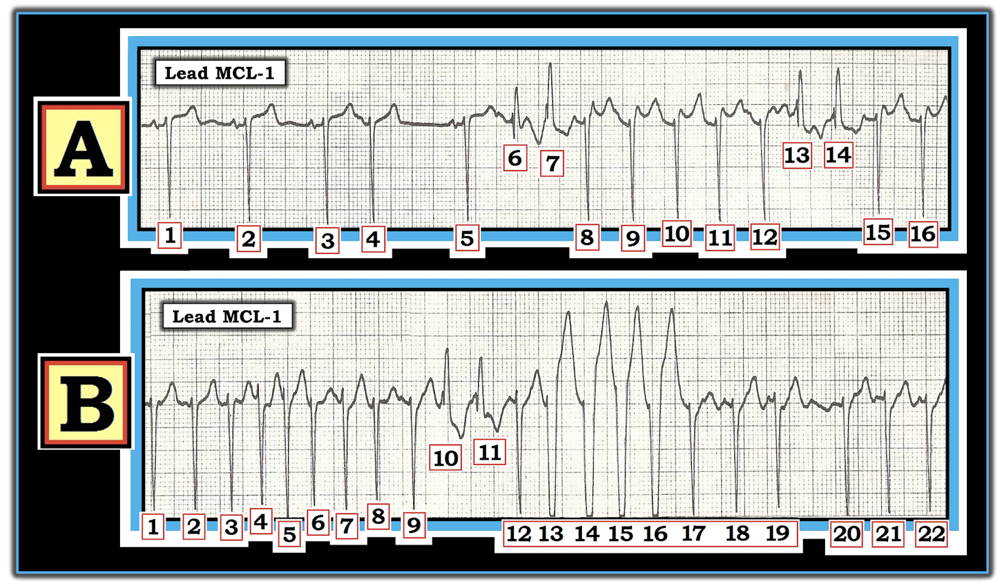
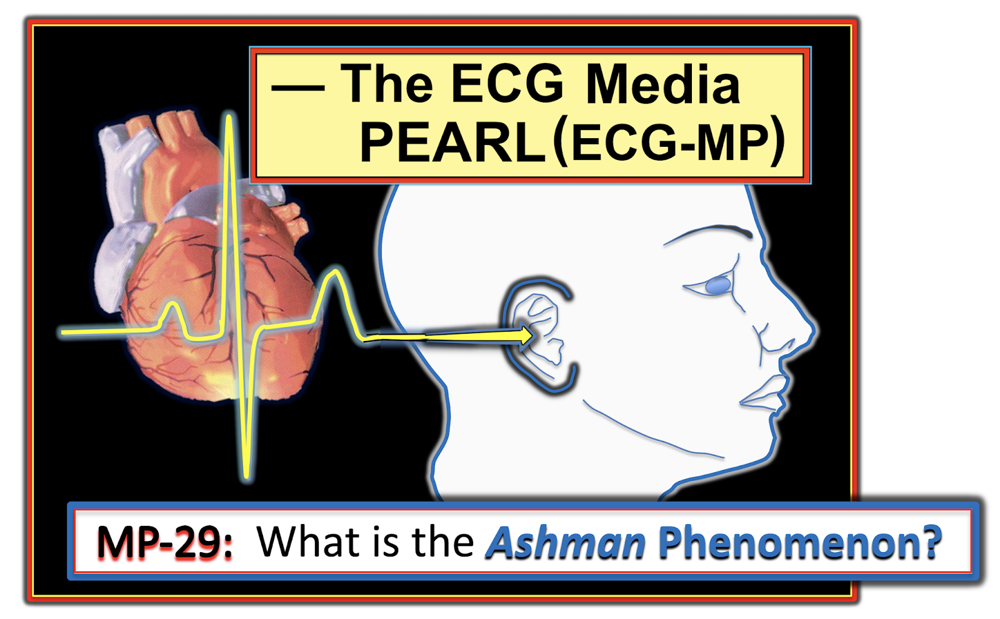
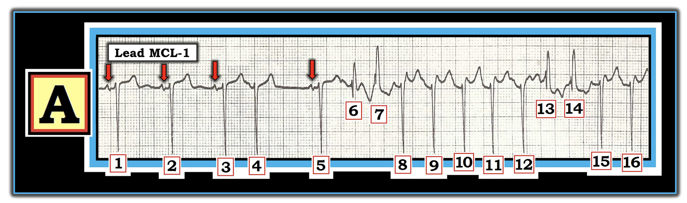
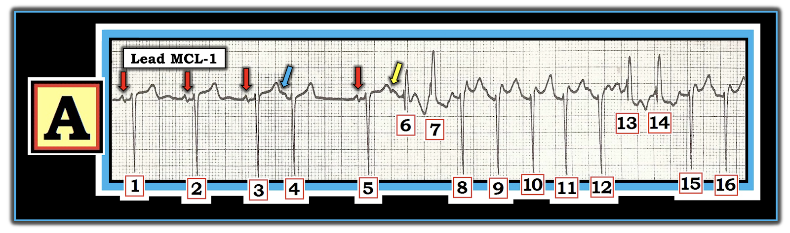
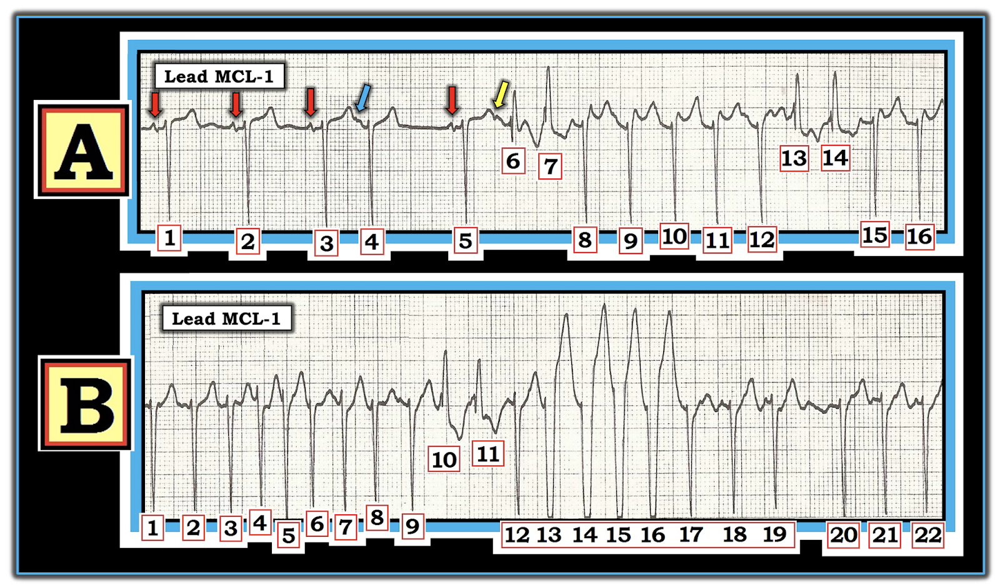

ECG Blog #212 (ECG MP-29) — Vì sao có nhiều hình dạng QRS đến vậy? Đây có phải hiện tượng Ashman?
2 dải nhịp chuyển đạo MCL-1 trong Hình-1 được ghi từ một người trưởng thành trung niên có huyết động ổn định tại thời điểm ghi các bản ghi này. Bản ghi B được ghi chỉ vài phút sau Bản ghi A.
CÂU HỎI: NHỮNG nhận định nào sau đây là ĐÚNG về nhiều hình dạng QRS khác nhau thấy trong 2 dải nhịp này?
— a) Nhiều khả năng tất cả các nhát trên 2 bản ghi này đều là nhát trên thất.
— b) Có nhiều PAC, và có lẽ còn có cả AFib.
— c) Có hiện tượng Ashman.
— d) Có dẫn truyền lệch hướng kiểu RBBB.
— e) Các nhát #13 đến 16 có lẽ là một loạt 4 nhát NSVT (nhịp nhanh thất không bền bỉ – Non-Sustained Ventricular Tachycardia).
— f) Một khi tần số tim chậm lại — nhiều khả năng tất cả các phức bộ QRS sẽ trông giống nhau.


- LƯU Ý #1: Chuyển đạo MCL-1 là một chuyển đạo theo dõi bên phải, cho góc nhìn tương tự như chuyển đạo V1 trên bản ghi 12 chuyển đạo. Và, mặc dù lý tưởng nhất là có sẵn điện tâm đồ 12 chuyển đạo đầy đủ để đánh giá nhịp — 2 dải nhịp một chuyển đạo này vẫn cho thấy đủ thông tin để trả lời Câu hỏi ở trên.
=======================================
LƯU Ý #2: Đến đây, một số bạn đọc có thể muốn nghe ECG Audio PEARL dài 8:00 phút trước khi đọc Suy nghĩ của tôi về điện tâm đồ ở Hình-1. Bạn cứ thoải mái xem Suy nghĩ của tôi về bản ghi này vào bất kỳ lúc nào (nằm bên dưới ECG MP-29).
=======================================


ECG Media PEARL #29 (8:00 phút Audio) hôm nay — Ôn lại hiện tượng Ashman là GÌ — Sử dụng nó trên lâm sàng NHƯ THẾ NÀO? — và — hiện tượng Ashman có còn chính xác khi nhịp nền là AFib hay không?
- LƯU Ý #3: Để ôn lại chi tiết về hiện tượng Ashman — kèm minh họa ứng dụng lâm sàng — Mời xem ECG Blog #70. Việc sử dụng hiện tượng Ashman khi có AFib được ôn lại trong ECG Blog #71.
SUY NGHĨ CỦA TÔI:
2 dải nhịp ở Hình-1 cực kỳ khó — nhưng chúng là một ví dụ tuyệt vời về lập luận suy diễn, ở chỗ chỉ sau khi diễn giải Bản ghi A — tôi mới có thể tự tin diễn giải Bản ghi B. Trong quá trình đó — có rất nhiều điểm then chốt (pearl) đáng bàn, hữu ích cho việc diễn giải loạn nhịp tối ưu.
- Tôi sẽ bắt đầu bằng Đáp án của tôi cho CÂU HỎI ở trên — Các lựa chọn a, b, c, d và f là đúng.
- Lựa chọn sai duy nhất là e.
- NẾU bạn không đồng ý với bất kỳ đáp án nào của tôi — Hãy ĐỌC phần dưới đây!
Bắt đầu với Bản ghi A:
Ở cả hai bản ghi trong Hình-1 — mỗi bản ghi đều có những phần dễ hơn và những phần khó hơn để diễn giải.
- ĐIỂM THEN CHỐT (PEARL) #1: Khi một dải nhịp có nhiều thành phần — hãy bắt đầu với (các) phần dễ hơn của bản ghi. Phần lớn trường hợp — việc này gồm trước tiên là tìm nhịp nền. Ở Bản ghi A — cần thấy rõ rằng 3 nhát đầu tiên là nhịp xoang, vì phức bộ QRS hẹp, và trước mỗi QRS là một sóng P có hình dạng tương tự với khoảng PR hằng định và bình thường (các mũi tên ĐỎ ở Hình-2).
- Nhát #5 rõ ràng là thêm một nhát dẫn truyền từ xoang — vì nhát này có phức bộ QRS hẹp và có hình dạng tương tự , đi trước là một sóng P có khoảng PR giống hệt khoảng PR đi trước các nhát dẫn truyền từ xoang #1, 2 và 3.


ĐIỂM THEN CHỐT (PEARL) #2: Bằng chứng thuyết phục nhất cho thấy một nhát đến sớm là PAC (ngoại tâm thu nhĩ – Premature Atrial Contraction) — là chứng minh được rằng trước nhát này có một sóng P đến sớm. Vì thời điểm xuất hiện của sóng P đến sớm thường trùng với sóng ST-T đi trước — việc nhận ra các sóng P đến sớm bị che khuất một phần trong đoạn ST có thể khó, nhất là khi có nhiễu đường nền trên đoạn ST.
- Thách thức với người đọc — là phân biệt đâu là một khía (tức là, khía do một sóng P đến sớm bị che khuất một phần tạo ra) “thật” — với đâu nhiều khả năng là nhiễu hoặc là “biến thiên bình thường” nhẹ của các sóng điện tâm đồ vẫn thường thấy ở các bản ghi bình thường.
- Ở Hình-2 — mặc dù hình dạng sóng ST-T của các nhát #1, 2 và 4 có thay đổi nhẹ — hình dạng của các sóng ST-T này vẫn trơn nhẵn!
- Dù tinh tế — rõ ràng có một khía nhỏ ở sóng T đi trước nhát đến sớm #4 (mũi tên XANH DƯƠNG ở Hình-3). Khía nhỏ này là một sóng P đến sớm — và sự hiện diện của nó xác nhận rằng nhát #4 là một PAC.
- Bằng chứng ủng hộ thêm rằng nhát #4 là PAC đến từ một khía tinh tế tương tự đi trước nhát #6 (mũi tên VÀNG ở Hình-3). Vì sóng ST-T của các nhát #1, 2 và 4 trơn nhẵn — và chỉ có sóng ST-T của các nhát đến sớm #4 và 6 là có khía tinh tế — chúng ta phải cho rằng khía này là thật, và là kết quả của các sóng P đến sớm bị che khuất một phần. Điều này chứng minh rằng nhát #4 và #6 là PAC.


ĐIỂM THEN CHỐT (PEARL) #3: Lý do phức bộ QRS của nhát #6 ở Hình-3 trông khác với phức bộ QRS của 5 nhát đầu tiên trong bản ghi này — là vì nhát #6 được dẫn truyền lệch hướng kiểu RBBB (blốc nhánh phải – Right Bundle Branch Block).
- Như đã bàn chi tiết trong ECG Blog #211 — dạng dẫn truyền lệch hướng hay gặp nhất là có hình thái RBBB . Đó là vì ở hầu hết bệnh nhân, nhánh phải nhìn chung có thời kỳ trơ dài hơn thời kỳ trơ của các phân nhánh dẫn truyền khác.
- Hình thái QRS của nhát #6 ở Hình-3 hoàn toàn điển hình cho RBBB vì: i) Phức bộ QRS của nhát #6 giãn rộng nhẹ, nhưng không quá mức — so với các nhát dẫn truyền từ xoang #1, 2, 3 và 5; ii) Nhát #6 có hình thái rSR’ ba pha ở chuyển đạo MCL-1 bên phải này, với sóng r dương ban đầu mảnh, tương tự — tiếp theo là sóng S đi xuống dưới đường nền — và kết thúc bằng sóng R' dạng “tai-thỏ-phải-cao-hơn”; và, iii) Có hiện tượng Ashman!
ĐIỂM THEN CHỐT (PEARL) #4: Như đã ôn ở trên trong Audio PEARL (MP-29) hôm nay — cũng như trong ECG Blog #70 của chúng tôi — hiện tượng Ashman được tóm tắt dễ nhất bằng câu: “Nhát trông kỳ quặc nhất (khác biệt nhất) có xu hướng đi sau khoảng ngưng dài nhất.”
- “Khoảng ngưng” dài nhất ở Hình-3 là khoảng R-R giữa các nhát #4-5. Khoảng R-R đi trước dài hơn này “tạo điều kiện” thuận lợi cho dẫn truyền lệch hướng — vì khoảng R-R dài hơn này làm kéo dài thời kỳ trơ tuyệt đối và tương đối sau đó.
- LƯU Ý: Khoảng ghép của các sóng P được đánh dấu bằng mũi tên XANH DƯƠNG và VÀNG ở Hình-3 gần như bằng nhau. Lý do nhát #6 dẫn truyền lệch hướng kiểu RBBB (trong khi nhát đến sớm #4, với khoảng ghép PAC giống hệt, lại dẫn truyền bình thường) — là vì khoảng ngưng dài hơn trước nhát #5 làm kéo dài thời kỳ trơ sau đó. Đây chính là hiện tượng Ashman!
- Nhận ra hiện tượng Ashman ở Hình-3 là thiết yếu để “giải” nhịp này — vì điều này xoá bỏ mọi nghi ngờ về lý do vì sao nhát #6 rộng hơn và trông khác với 5 nhát trông bình thường đi trước nó. Giờ đây chúng ta đã có lý do cho dẫn truyền lệch hướng — và, có lý do vì sao nhát #6 có dẫn truyền lệch hướng kiểu RBBB còn nhát #4 thì không.
- ĐIỂM THEN CHỐT (PEARL) #5: Vì giờ đây chúng ta đã biết nhát #6 được dẫn truyền lệch hướng — rất có khả năng tất cả các nhát khác ở Bản ghi A và Bản ghi B trông giống nhát #6 cũng được dẫn truyền lệch hướng kiểu RBBB. Do đó — các nhát #7, 13 và 14 ở Hình-3 cũng gần như chắc chắn được dẫn truyền lệch hướng. LƯU Ý: Hình thái QRS thay đổi nhẹ khi dẫn truyền lệch hướng là điều thường gặp — nên việc sóng S của nhát #7 không đi xuống dưới đường nền hoàn toàn không làm lung lay niềm tin mạnh mẽ của tôi rằng các nhát #6, 7; 13 và 14 ở Hình-3 đều được dẫn truyền lệch hướng!
Tiếp tục phần đánh giá của tôi về Bản ghi A:
- Sóng P “mất đi” sau nhát #6 ở Hình-3. Các gợn sóng của đường nền vẫn còn — nhưng không còn thấy sóng P rõ ràng nữa. Đo các khoảng R-R bằng compa đo, bắt đầu từ nhát #6 — cho tới cuối bản ghi — cho thấy sự thay đổi tinh tế nhưng có thật ở nhiều (phần lớn) khoảng R-R. Xét đến các gợn sóng thô ở đường nền xuất hiện sau nhát #6 — có vẻ như bệnh nhân này đã chuyển sang AFib (rung nhĩ – Atrial Fibrillation), ở đây với đáp ứng thất nhanh và “sóng rung” thô.
- ĐIỂM THEN CHỐT (PEARL) #6: Khi đáp ứng thất của AFib nhanh (như ở Hình-3) — khoảng R-R có thể trông đều, trong khi thực tế — sự thay đổi tinh tế nhưng có thật của khoảng R-R vẫn tồn tại.
LƯU Ý: Hiển nhiên trong thực hành, không phải lúc nào cũng có thời gian để lấy compa đo (calipers) ra khi bạn đang ở bên giường một bệnh nhân bệnh cấp tính. Tôi xin nhấn mạnh rằng tôi đã không cần đến compa đo để biết rằng khoảng R-R của các nhát #6 đến 16 trong Hình-3 là không hoàn toàn đều. Khi đã luyện tập — việc nhận ra sự không đều nhẹ-nhưng-có-thật này trở nên dễ hơn, ngay cả khi không có compa đo. Dù vậy, khi tôi có thời gian — tôi dùng compa đo để xác nhận.
- ĐIỂM THEN CHỐT (PEARL) #7: Như đã ôn lại ở trên trong Audio PEARL (MP-29) hôm nay — và trong ECG Blog #71 của chúng tôi — hiện tượng Ashman có thể phần nào kém tin cậy hơn trong bối cảnh AFib. Vì tần số của các sóng rung nhĩ rất nhanh (thường từ 400 đến 600 xung sóng rung mỗi phút) — khả năng xảy ra dẫn truyền “ẩn” (tức là dẫn truyền một phần qua tâm nhĩ vào nút AV) là rất lớn — và điều này có thể làm thay đổi đặc tính dẫn truyền đủ để làm thời gian trơ thay đổi theo cách không dự đoán được. Dù vậy — tôi vẫn dùng hiện tượng Ashman trong AFib, và phần lớn thời gian nó vẫn đúng. Nhưng vì khả năng dẫn truyền ẩn này — hãy nhận thức rằng hiện tượng Ashman trong AFib không đáng tin cậy bằng khi đang ở nhịp xoang.
- Tôi ngờ rằng lý do các nhát #13 và 14 trong Hình-3 dẫn truyền lệch hướng dù khoảng R-R đi trước không dài ra — có thể là hệ quả của dẫn truyền “ẩn” xảy ra ở đây kèm theo AFib.
Chuyển sang Bản ghi B:
Để cho rõ — tôi đã ghép Bản ghi A và Bản ghi B vào Hình-4.
- ĐIỂM THEN CHỐT (PEARL) #8: Tôi rất tin vào điều mà tôi gọi là Khái niệm “Birds-of-a-Feather” (“chim cùng đàn”). Khái niệm này cho rằng NẾU một hiện tượng nhịp nào đó xảy ra ở một phần của bản ghi – thì nhiều khả năng nó sẽ xảy ra lần nữa ở những phần khác của bản ghi (hoặc ở các bản ghi sau đó của cùng bệnh nhân này). Lát nữa chúng ta sẽ thấy khái niệm này hữu ích vô cùng ra sao, khi bắt đầu đánh giá Bản ghi B.


Bản ghi B đáng chú ý vì xuất hiện một hình dạng QRS mới — cụ thể là 4 nhát giãn rộng liên tiếp ở giữa dải nhịp này ( = các nhát #13, 14, 15, 16).
- Một lần nữa — tôi thiên về việc áp dụng khái niệm tôi đã trình bày ở PEARL #1 — tức là bắt đầu từ những phần của một bản ghi phức tạp mà chúng ta đã giải được. Các nhát #1 đến 9; nhát #12 — và các nhát #17 đến 22 trong Hình-4 rõ ràng đều là nhát trên thất, và có hình dạng giống các nhát dẫn truyền từ xoang #1, 2, 3 và 5 trong Bản ghi A.
- Các nhát #10 và 11 trong Hình-4 gần như chắc chắn là nhát trên thất với dẫn truyền lệch hướng kiểu RBBB — vì hình dạng của chúng giống hệt 4 nhát trong Bản ghi A mà chúng ta đã xác định là dẫn truyền lệch hướng.
- Sóng P không có trong Bản ghi B. Thấy các gợn sóng ở đường nền trông rất giống các “sóng rung” mà chúng ta đã xác định trong Bản ghi A. Và ngay cả khi không có compa đo — cũng thấy rõ rằng tất cả các nhát này đều không đều hoàn toàn. Vì vậy, nhịp nền trong Hình-4 vẫn tiếp tục là AFib với đáp ứng thất nhanh.
Việc còn lại — là xác định nguyên nhân của các nhát #13, 14, 15 và 16 trong Hình-4, vốn biểu hiện một hình dạng QRS mới (tức là các nhát rộng chủ yếu âm). Tôi sẽ làm điều này bằng cách đưa ra một số nhận xét.
- Nhịp nền ở nửa sau của Bản ghi A, và ở các nhát mà chúng ta đã bình luận cho tới giờ trong Bản ghi B, là AFib nhanh. Theo Khái niệm “Birds-of-a-Feather” ( = PEARL #8) — biết đâu AFib có mặt trong suốt toàn bộ thời gian của Bản ghi B?
- Lưu ý rằng không có “khoảng ngưng sau ngoại tâm thu” sau chuỗi 4 nhát rộng chủ yếu âm (các nhát #13 đến 16). Thay vào đó, kiểu không đều hoàn toàn rất-nhẹ-nhưng-có-thật của nhịp nền vẫn được duy trì suốt toàn bộ dải nhịp trong Bản ghi B.
- Mặc dù dẫn truyền lệch hướng kiểu LBBB rõ ràng ít gặp hơn nhiều so với dẫn truyền lệch hướng kiểu RBBB hay LAHB — nó vẫn xảy ra. Phức bộ QRS chủ yếu âm ở chuyển đạo MCL-1 bên phải này, với sóng r khởi đầu không hơn gì một nét mảnh, nhỏ xíu và nhánh xuống của sóng S rất dốc, là phù hợp với hình dạng LBBB điển hình.
- ĐIỂM THEN CHỐT (PEARL) #9: Ca này nhắc tôi nhớ tới một dấu hiệu điện tâm đồ ít gặp nhưng rất đặc hiệu mà Dr. Barney Marriott đã nêu — đó là, trong bối cảnh AFib nhanh — nếu bạn thấy một hay nhiều nhát dẫn truyền lệch hướng kiểu RBBB bị ngăn cách bởi một nhát trông bình thường duy nhất — trước khi khởi phát hình dạng QRS thứ 2 có thể phù hợp với dẫn truyền lệch hướng kiểu LBBB — thì hình ảnh này gần như chẩn đoán xác định dẫn truyền lệch hướng chuyển đổi giữa LBBB và RBBB. Chẳng phải đó chính xác là điều chúng ta thấy trong Bản ghi B sao? — tức là, các nhát #10 và 11 dẫn truyền lệch hướng kiểu RBBB — nhát #12 có hình dạng QRS bình thường — và rồi, các nhát #13 đến 16 hoàn toàn phù hợp với dẫn truyền lệch hướng kiểu LBBB.
Ý nghĩa lâm sàng:
Tầm quan trọng của việc nhận ra rằng tất cả các nhát trong Hình-4 đều là nhát trên thất, là không cần lo phải cân nhắc điều trị chống loạn nhịp cho các chuỗi VT — ngay cả khi có thấy các chuỗi nhát rộng chủ yếu âm dài hơn.
- Hãy điều trị nguyên nhân nguyên phát! Sau 5 nhát đầu tiên trong Bản ghi A — nhịp nền đã trở thành AFib nhanh. Tìm và khắc phục mọi nguyên nhân có thể thúc đẩy AFib mới xuất hiện — và nếu cần trong quá trình đó, dùng các thuốc ức chế nút AV làm chậm tần số nhiều khả năng sẽ kiểm soát được đáp ứng thất (nếu không chuyển được về nhịp xoang) — và rất có thể phần lớn (nếu không phải tất cả) các nhát rộng sẽ hết sau khi làm vậy.
==============================
Các bài ECG Blog liên quan tới case hôm nay:
- ECG Blog #70 — Ôn lại những điều cơ bản về hiện tượng Ashman.
- ECG Blog #71 — Hiện tượng Ashman có chính xác trong AFib không?
- ECG Blog #211 — Ôn lại chi tiết TẠI SAO dẫn truyền lệch hướng xảy ra (và tại sao dẫn truyền lệch hướng kiểu RBBB là dạng hay gặp nhất).